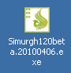

|
سیمرغ سبز یک نرم افزار پراکسی ایمن است. این نرم افزار به شما امکان می دهد تا بصورت ناشناس و با سرعت بالا در اینترنت به تبادل اطلاعات بپردازد.
نسخه جدید
نسخه جدید سیمرغ نیاز به نصب بر روی رایانه شخصی شما را دارد. بعد از نصب برنامه میتوانید از داخل
Start/All Programs
آنرا اجرا کنید.
بارگزاری سیمرغ سبز
برای بهره گیری از امکانات سسیمرغ سبز، ابتدا می بایستی نرم افزار مربوطه را از صفحه آن در Sesawe یا از آدرس">https://simurghesabzn> (واقع در وبگاه Sesawe ) بصورت رایگان بارگزاری نمایید. این نرم افزار برای هر نسخه ای از Microsoft Windows موجود می باشد. حجم فایل سیمرغ سبز کمتر از یک مگابایت است، بنابراین حتی اگر از اینترنت کم سرعت استفاده می کنید ، مدت زمان بارگزاری چندان طولانی نخواهد بود.
نکته در مورد محل دریافت برنامه
معمولا فایلهایی که توسط مرورگر
Microsoft Internet Explorer
بارگزاری می شوند بر روی Desktop رایانه شما ذخیره می گردند، اما فایلهایی که از طریق Mozilla Firefox بارگزاری شوند در My Documents —> Downloads ذخیره خواهند شد.

برای نصب برنامه باید به محل دریافت آن رجوع کنید.
نحوه نصب سیمرغ سبز
بعد از دریافت برنامه روی آن دو بار کلیک کنید تا برنامه شروع به نصب شدن کند.
در هنگام نصب نیاز به هیچ تغییری در حالت پیش فرض وجود ندارد و شما کافیست که دکمه
Next
را تا به انتها فشار دهید.
در زمان نصب به گزینهای با متن
Create a Desktop icon
بر میخورید که با انتخاب این گزینه یک آیکون از این برنامه در صفحه نمایش شما ساخته میشود.
در آخرین مرحله هم دکمه
Install
و بعد
Finish
را بفشارید تا برنامه نصب شود.
نحوه استفاده از سیمرغ سبز
بعد از نصب برنامه اگر انتخاب ساختن آیکون یا همان "Create a Desktop icon " را کرده باشید٬ کافیست که بر روی صفحه نمایش آنرا پیدا و اجرا کنید.
در صورتی که این انتخاب را انجام ندادید٬ میتوانید همانطور که در بالا گفتیم با مراجعه به
Start/All Programs
آنرا اجرا نمایید.
توجه:
هنگامیکه برای اولین بار سیمرغ سبز را اجرا نمایید، ممکن است با پیغام Windows Security Alert مواجه شوید که از شما می خواهد در صورت تمایل مانع از اجرای برنامه سیمرغ شوید. از آنجاییکه سیمرغ برای کار کردن نیاز به تبادل اطلاعات با اینترنت دارد، بنابراین لازم است که گزینه Unblock یا Allow Access (بسته به نوع روایت Microsoft Windows) را انتخاب نمایید.
سپس ممکن است پنجره زیر ظاهر شود
یا این تصویر
پس از آنکه شروع اولیه سیمرغ با موفقیت انجام شد، کافی است بر روی
Proxy On
کلیک کنید، بدینترتیب سیمرغ ارتباط اینترنتی امنی برای شما فراهم می آورد.
وقتی دکمه
Proxy On
کمرنگ شد این نشان اینست که برنامه با موفقیت به سرور وصل شده است.
برای قطع شدن هم باید بر روی دکمه
Proxy Off
کلیک کنید.
اطمینان از اتصال به سرور سیمرغ سبز
اکنون پنجره جدیدی در Internet Explorer باز خواهد شد که صرفا جنبه آزمون دارد. بدین معنی که اگز مشاهده نمایید که ارتباط شما از طریق کشور دیگری مثلا آمریکا برقرار شده است، می توانید مطمئن شوید که سیمرغ با موفقیت تنظیمات مرورگر شما را تغییر داده ، و اکنون ارتباطی ایمن برای شما فراهم آمده است و می توانید با خیال راحت در اینترنت به جستجو بپردازید.
برای آنکه از منشاء ارتباط اینترنتی خود آگاهی یابید، می توانید از امکانات موجود در وبگاه http://www.geoiptool.com/ استفاده کنید. چنانچه منشاء ارتباطی شما در مکانی بسیار دورتر از محل زندگی شما (مثلا در کشوری مانند آمریکا) تعیین شود، بدینترتیب شما مطمئنا از کانال ارتباطی امن سیمرغ بهره می برید.
نکته در مورد مرورگر مورد استفاده سیمرغ
برنامه سیمرغ از مرورگری که شما به عنوان مرورگر پیش فرض " Default" انتخاب کردهاید استفاده میکند.
|